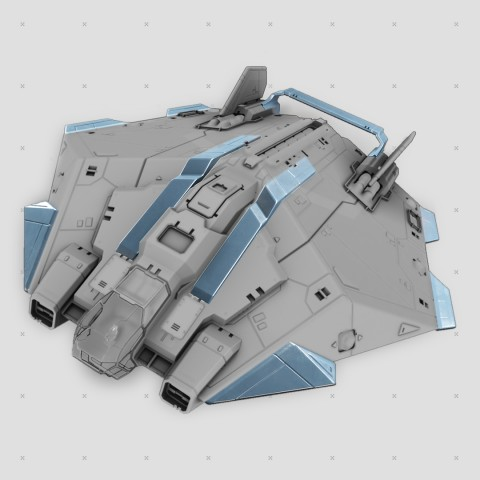
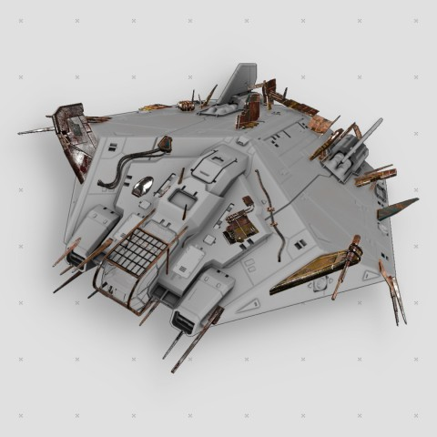
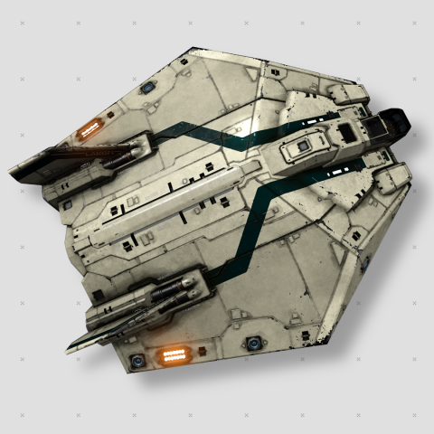
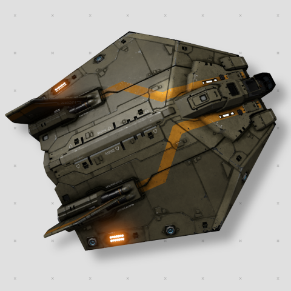
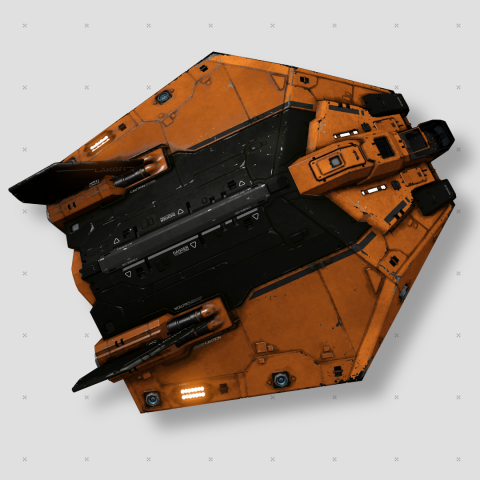
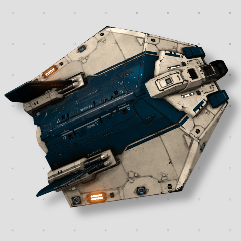
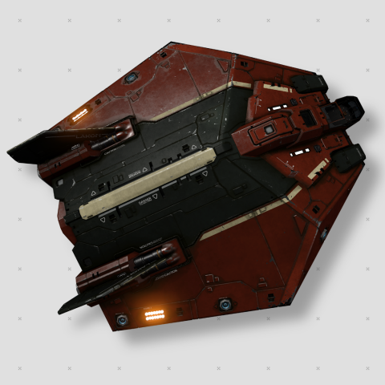
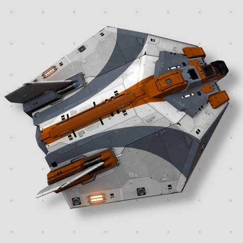
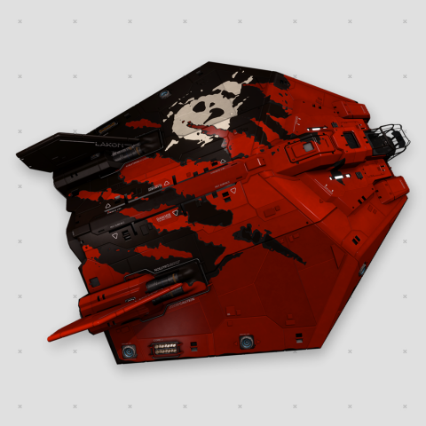

CosmoZON.ru - дешевле только у пиратов
ASP Explorer
Краткое описание товара
Многоцелевой корабль — может быть оборудован для любой задачи, будь это перевозка грузов, бой или исследование звезд.Подробное описание товара
Asp Explorer это гражданская версия военного модели Asp Mk II (впервые поступил на службу в 2878). На данный момент лицензия на производство принадлежит Lakon Spaceways, которая продает его клиентам, нуждающимся в кораблях с несколькими экипажами. Этот класс заслужил свою репутацию благодаря полетам на дальние дистанции и секретным заданиям.
Тактико-технические характеристики
- Производитель: Lakon Spaceways
- Роль: Универсальный / Исследователь
- Скорость: 250 м/с
- Форсаж: 340 м/с
- Маневренность: 7.4
- Дальность прыжка (пустой): 13.12 св.лет
- Дальность прыжка (груженый): 12.07 св.лет
- Щит: 152 МДж
- Броня: 378
- Масса корпуса: 280 т
- Груз: 38 т
- Топливный бак: 32 т
- Размеры: 56.5L — 51.3W — 19.7H
- Размер посадочной площадки: Средний
- Стоимость корабля: 6 661 150 Кредитов
Дополнительная информация:
Asp Explorer обладает высокой дальностью прыжка, относительно других кораблей в игре, поэтому он является лучшим разведчиком дальнего космоса. На нём установлено 6 отсеков для боевого оборудования, а также ASP обладает неплохим радиусом поворота для его размеров, всё это делает его больше, чем просто разведывательным кораблём. ASP может выступать в качестве тяжелого охотника за головами, так как может быть оборудован превосходным оружием и обладать хорошей маневренностью для своего размера
Доступные расцветки корабля:
|  |  |  |
|  |  |  |
|  |  |  |